Revisión completa · 27 nov 2026 · ramas pagina-how-built y pagina-biblioteca (commit 2cf37b1)
Nada se rompe. Las dos páginas se ven bien a 390, 768 y 1440 px, no hay errores en la consola, se navegan con teclado y no tienen animaciones (así que con movimiento reducido no cambia nada). Están hechas con piezas del sistema y la comprobación del build pasa. Las dos se editan en Keystatic.
Es ámbar por el texto, no por el código: el borrador de «How it’s built» habla de una home de agentes que todavía no existe y mezcla «yo» con «Ali» en tercera persona. Y, aunque las dos son la misma plantilla (página larga sobre negro), About y «How it’s built» parecen de webs distintas.
Preguntas para Ali (no son fallos)
main así.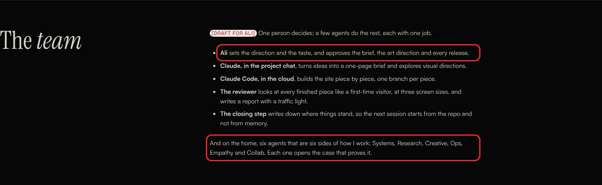
1440 px · «The team», abajo
«Dice que en la home hay seis agentes… voy a la home y veo caras, no agentes.»
El párrafo «And on the home, six agents… Each one opens the case that proves it» describe la home v8, que es la última pieza (DECISIONES 27 nov; PROYECTO.md: hasta entonces se queda la home de caras). Si la página sale antes que la home, la frase es falsa. Además, Research no abre un caso, abre la Biblioteca (WIP). Lo demás del texto lo he cruzado con CLAUDE.md, DESIGN.md, DECISIONES.md y el código y cuadra: tokens DTCG, DESIGN.md, manifiesto, skill, comprobación antes del build con deuda que solo baja, styleguide generado, una rama por pieza, revisor con semáforo, cierre, y Astro + Keystatic + GitHub + Vercel. No he encontrado datos inventados de Ali ni nada de Cupra, Roche o búsqueda de trabajo.
1440 px · las dos zonas marcadas
«¿Quién me está contando esto? Primero “Ali sets the direction”, luego “how I work”.»
«Ali sets the direction…» y «Nothing reaches the live site without Ali’s yes» van en tercera persona; «six sides of how I work» va en primera. En una web personal, el salto se lee raro. Es elección de Ali: una voz para toda la página.
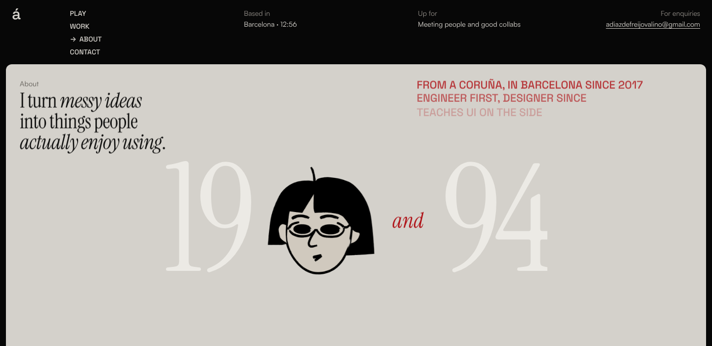
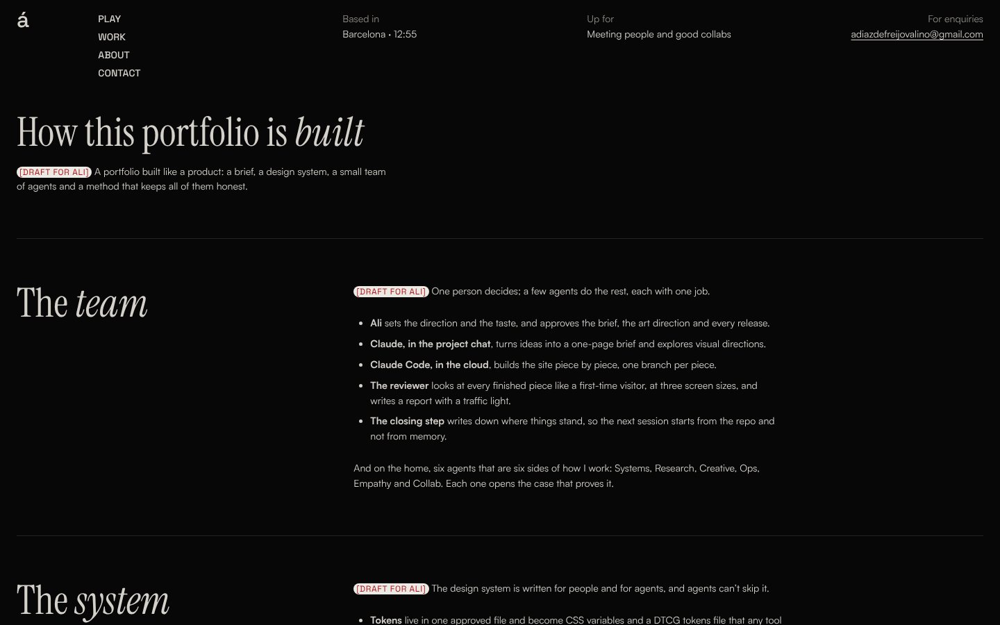
1440 px · arriba About, abajo «How it’s built»
«Paso de About a esta página y parece otra web: una es de papel, la otra negra con títulos a la izquierda.»
Los estilos dicen que la plantilla 6 (página larga) es para las dos: «título de sección a la izquierda y contenido a la derecha, sobre negro». «How it’s built» la cumple; About (ya aprobada antes) va sobre papel y con otra composición. No es un fallo de esta pieza, pero ahora que existe el componente LongSection se nota la diferencia. Pregunta para Ali: ¿About pasa a LongSection, o la plantilla 6 se queda solo para esta página?
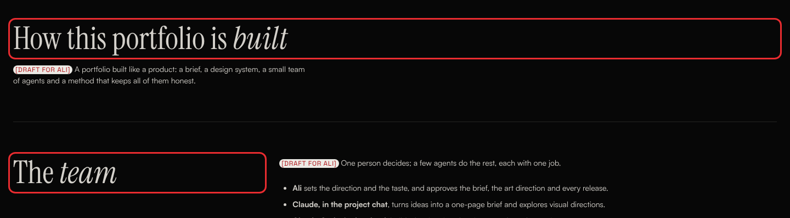
1440 px · título de página y de sección
«No sé bien cuál es el título de la página y cuál el de la sección.»
Los dos usan el tamaño «sección». Es lo que permite el sistema (el tamaño display es solo para la home), así que no es un error de construcción; lo separan la posición y el espacio. Si a Ali le chirría, es una pregunta de gusto.
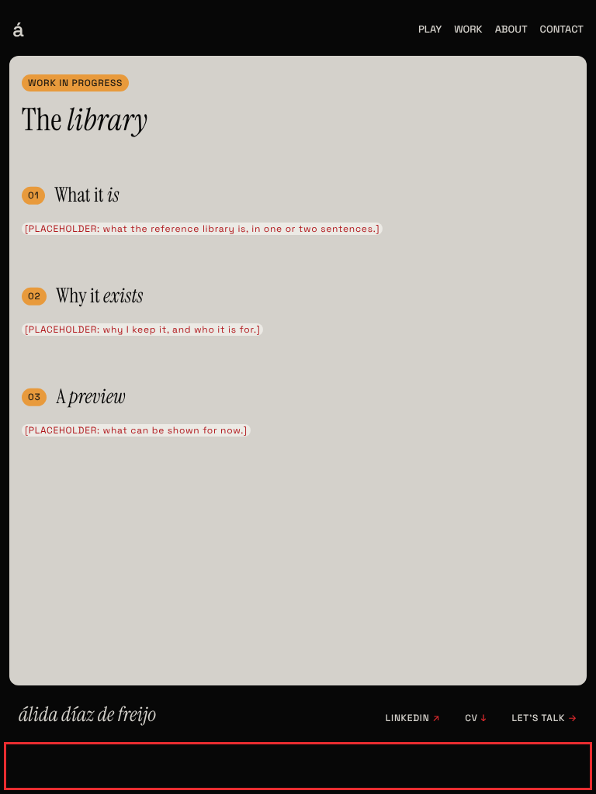
768 px · franja negra bajo el pie
«El pie no está abajo del todo; sobra un trozo negro.»
El panel se estira con una altura calculada a ojo (la pantalla menos 260 px) y un ancho máximo de 900 px; ninguno de los dos valores está en el styleguide. A 1440 y 390 cuadra; a 768 sobran unos 50 px. Es pequeño, pero es estilo puesto a mano.
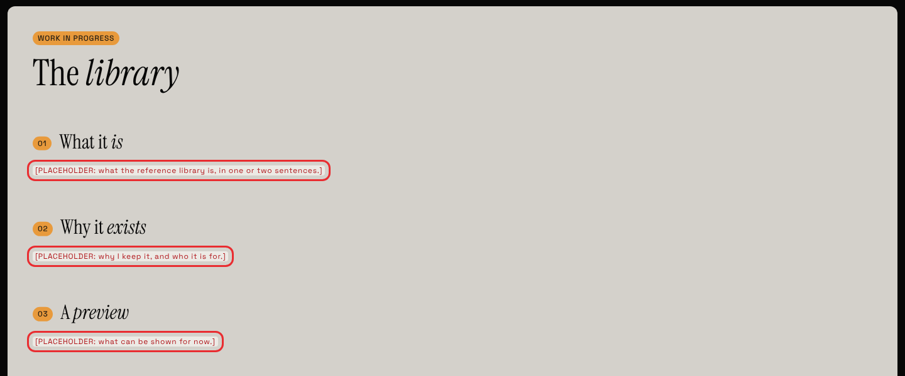
1440 px · marcas de borrador
Un visitante no lo notaría (y antes de publicar desaparecen).
El estilo de «[DRAFT FOR ALI]» y «[PLACEHOLDER]» está copiado igual en las dos páginas y no es un componente del styleguide. Además, el ancho de lectura cambia: 56, 60 y 64 caracteres según el bloque. Se lee bien y el contraste es bueno (5,9:1), pero es estilo fuera del sistema.
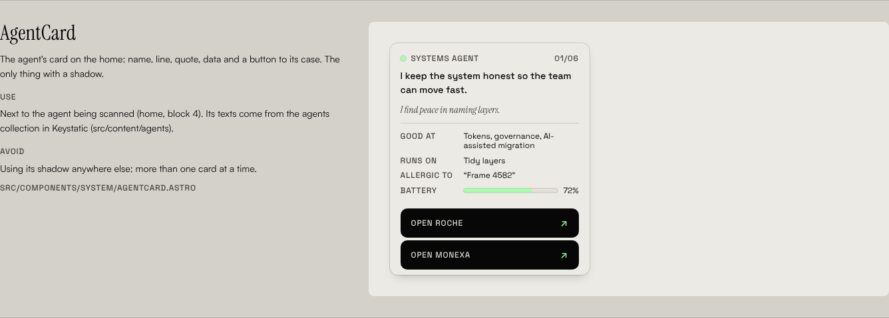
/styleguide · ficha con dos botones
«Cambio el texto de un agente en Keystatic y no veo el cambio en ninguna página.»
La colección de agentes tiene los seis textos aprobados y la ficha abre uno o dos casos (Systems → Roche y Monexa; Research → la Biblioteca). Se ve bien en el styleguide a 1440 y 390 px y coincide con DECISIONES. Pero ninguna página lee todavía la colección (la usará la home de agentes) y la ficha del styleguide es un ejemplo fijo. Además, el campo «Agent» tiene que ser exactamente systems, research…, en minúsculas: con cualquier otra cosa el build falla.
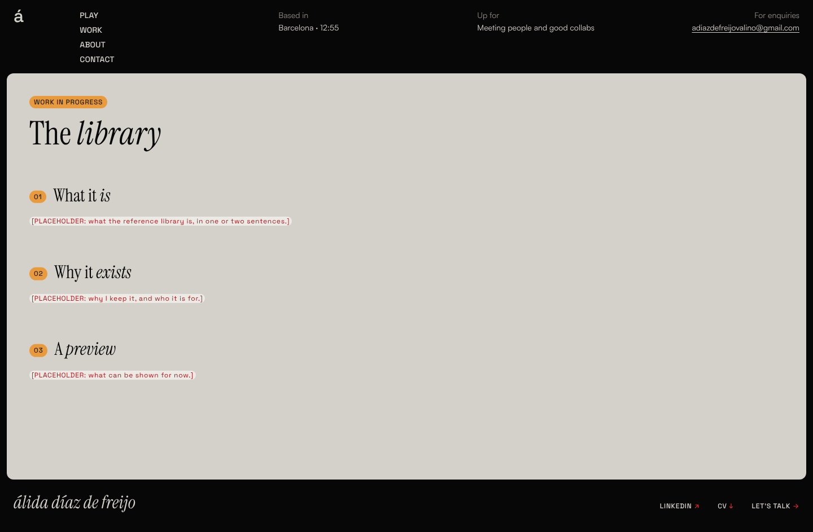
1440 px · Biblioteca
Nada todavía: el avance está vacío.
En Keystatic, «Preview» pide imagen, ancho, alto, texto alternativo y pie, pero ancho y alto no son obligatorios. Si Ali sube una imagen sin rellenarlos, la caja se queda sin proporción. Igual pasa con «Lead» de «How it’s built»: admite negritas y enlaces, pero la ayuda del campo no lo dice.
How this portfolio is built · 390 · 768 · 1440
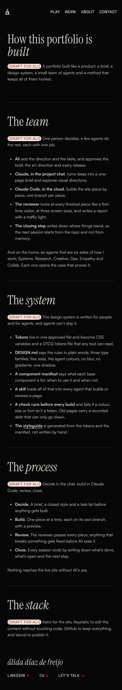
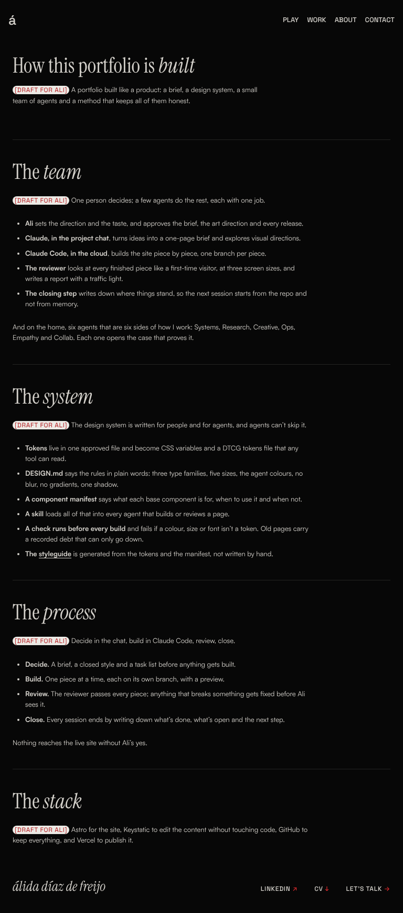
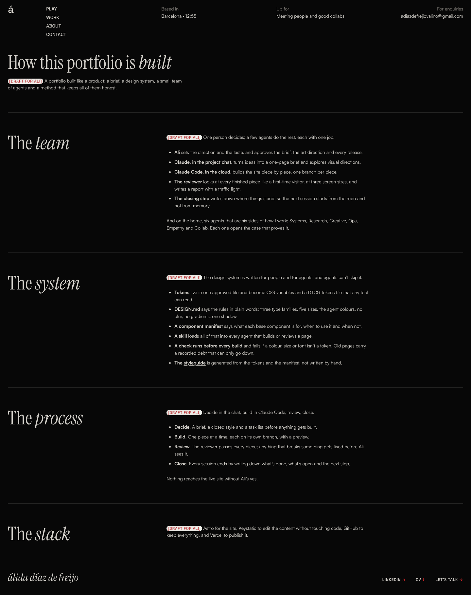
Library · 390 · 768 · 1440
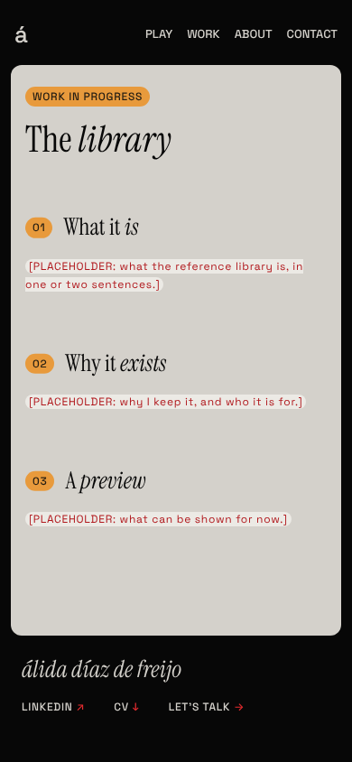
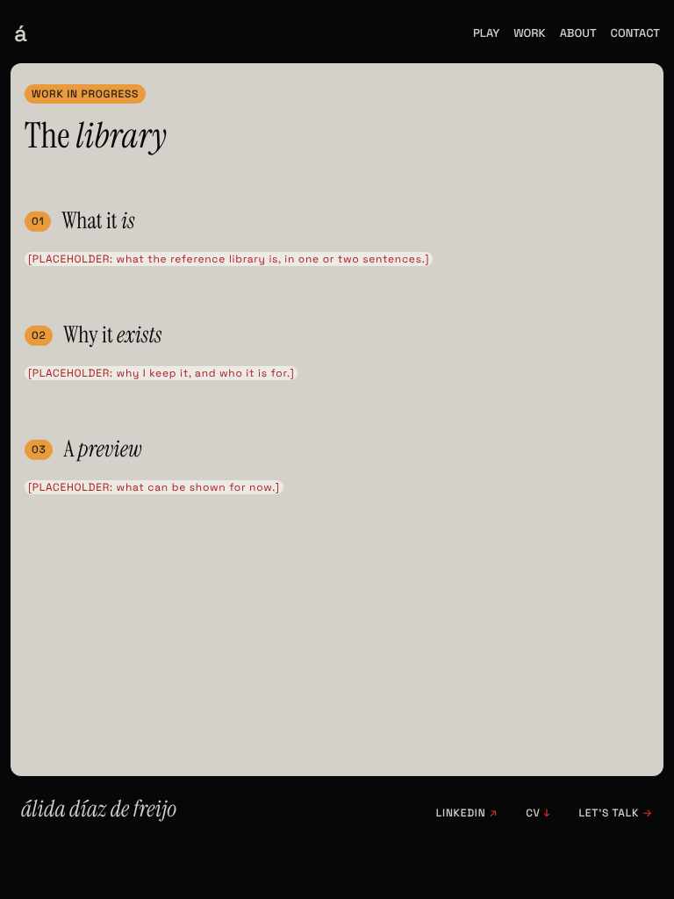
LongSection en el styleguide · 1440 y 390 (se ve igual que en la página)
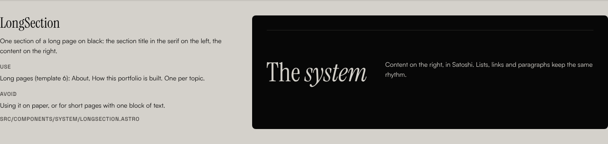
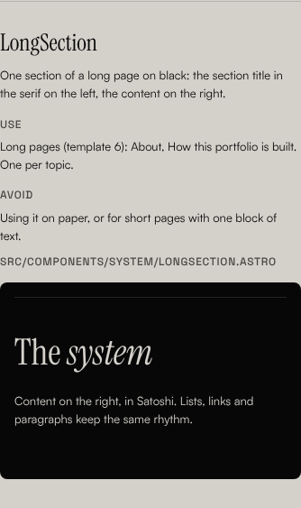
| Criterios | «How it’s built» cuenta el equipo, el sistema agéntico (tokens DTCG, DESIGN.md, manifiesto, skill, comprobación del build, styleguide generado) y el proceso (decidir en el chat, construir en Claude Code, revisor, cierre), marcado [DRAFT FOR ALI]. La Biblioteca tiene qué es, por qué y avance, con [PLACEHOLDER] visibles y la píldora y los números en ámbar (Research). |
| Sistema | npm run check pasa (55 tokens, sin roturas nuevas, deuda 304). Solo componentes del sistema; LongSection está en el manifiesto y en /styleguide, y se ve igual que en la página. |
| Keystatic | Singletons «How it’s built» y «Library (WIP)» y colección «Agents» con los campos que pintan las páginas. Lo que se ve sale de esos archivos, nada escrito a mano en la página. |
| Pantallas | 390, 768 y 1440 px sin nada cortado, tapado ni desbordado. A partir de 1100 px el título va a la izquierda y se queda fijo mientras bajas por su sección; por debajo, se apila. |
| Consola y enlaces | Sin errores ni avisos, sin peticiones fallidas. Todos los enlaces abren (incluido el de styleguide). |
| Teclado | Foco visible (contorno claro de 2 px) en todos los enlaces, en orden lógico. |
| Movimiento | Ninguna animación en las dos páginas; con movimiento reducido se ven igual. |
| Lectura | Texto sobre negro 13,2:1; píldora ámbar 7,1:1; marcas rojas 5,9:1. Sin imágenes, así que no hay textos alternativos que revisar. |
| Peso | Unos 126 KB por página (letra y CSS); sin imágenes ni vídeo. |
| Editar en Keystatic | La vista previa es una copia estática: no he abierto el panel de Keystatic ni he guardado un cambio para verlo en la página. Lo he revisado leyendo la configuración. |
| La web en Vercel | He revisado en local (copia estática en localhost:4328), no en una vista previa de Vercel. En local los enlaces van a «.html»; no he visto cómo se resuelven allí. |
| Móvil y tableta reales | Solo emulados en Chromium a 390 y 768 px, con táctil simulado. Ni Safari ni un iPhone de verdad. |
| Red lenta | No he limitado la conexión. Son páginas de solo texto y muy ligeras, así que el riesgo es bajo. |
| Lector de pantalla | He mirado la estructura (un título principal y secciones con su título), pero no las he escuchado con un lector. |
| La ficha de agente en la home | La home de agentes aún no existe; solo he visto la ficha en el styleguide. |